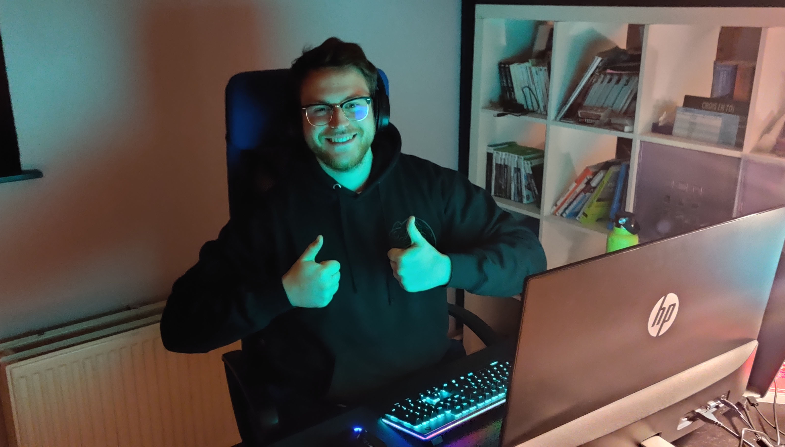

About me
Hi, welcome to my presentation website! I'm Etienne, 26 years old and ready to take part to a new adventure, made of challenges, cooperation and coffee I guess. I've studied at EPHEC in e-Business section where I learned a lot of things about e-commerce, digital marketing and project managing. BUT, there is always a but, now that I finished my scholarship I feel like something is missing from my education and coding is part of it. I've had some basic coding classes in my first year and during my formation the moment I was checking the code while doing a website was my favourite part. Besides, I like listening to music (from classic to rock, rap, electronic music), playing co-op and competitive video games or board games, cooking, drinking a nice beer or even cycling. I've made a small video talking about my motivation, hope you'll like it!
